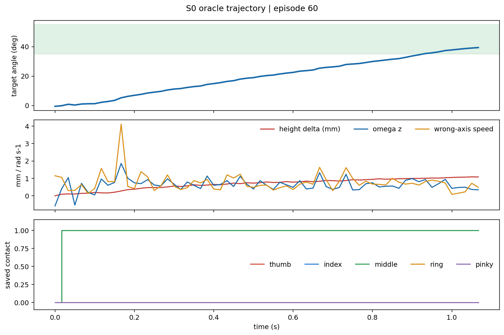
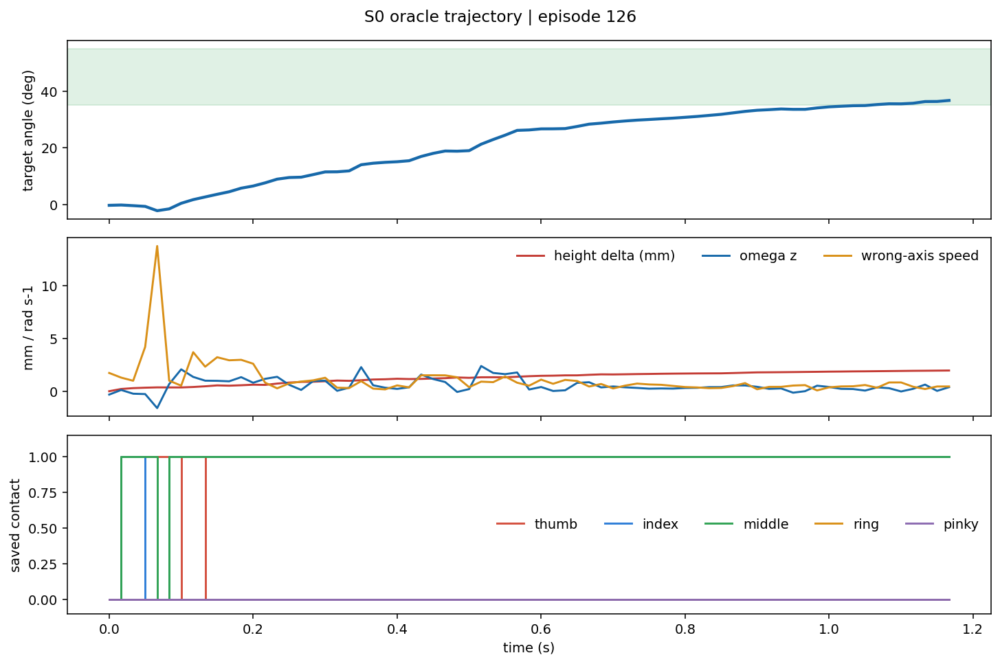
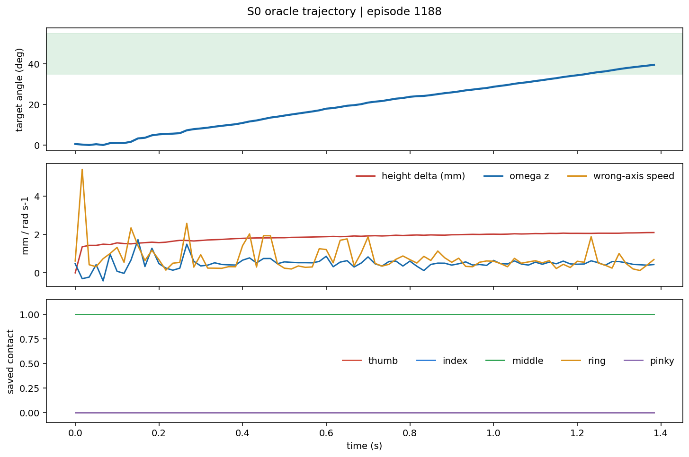

典型成功轨迹
episode 60 · 1.08s · peak 39.4° · contacts 3

接触变化最多
episode 126 · 1.18s · peak 36.7° · contacts 9

姿态变化最大
episode 1188 · 1.40s · peak 39.5° · contacts 0

冻结的 Isaac rollout 状态，使用同一 Dex5+pen MuJoCo 网格资产离屏回放。
任务范围：P3 → 45°±10° 短旋转 → 制动保持。不是完整转笔、handoff 或真机执行。
episode 60 · 1.08s · peak 39.4° · contacts 3

episode 126 · 1.18s · peak 36.7° · contacts 9

episode 1188 · 1.40s · peak 39.5° · contacts 0
